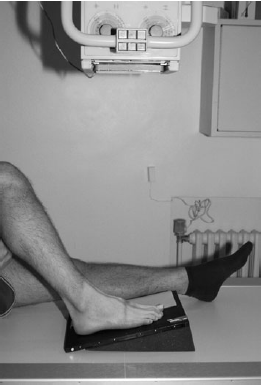

Foot(AP)
Centering point:The central ray is directed over the cuboid-navicular joint,
midway between the palpable navicular tuberosity and the
tuberosity of the fifth metatarsal

Cassette Size:24cm x 30cm (12 x 10 ins)
Landscape
Exposure Factors:60kVp on
4MaS
FFD:100cm
Bucky/Grid:No
Filter:No
Collimation:Outer skin margins of foot to include proximal ankle
Pathologies:Fractures, lesions
Position of patient and cassette
- The patient is seated on the X-ray table, supported if necessary,
with the affected hip and knee flexed
- The plantar aspect of the affected foot is placed on the
cassette and the lower leg is supported in the vertical position
by the other knee
- Alternatively, the cassette can be raised on a 15-degrees foam
pad for ease of positioning